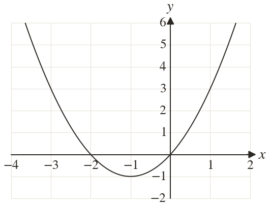
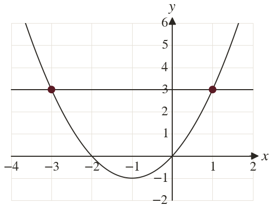

Westonbirt Maths · Quadratics and Their Graphs
Solving Equations from Graphs
Name: ______________________ Date: ____________
1
The graph of is drawn. Draw a line to solve
2
The graph of is drawn. Draw a line to solve to d.p.
3
meets the line at and
Solve
Solve
4
A graph of is drawn. Which line solves ? The solutions are whole numbers: find them.
5
meets at and
Solve
Solve
Ext
Using the graph of which line solves ? Find the solutions.


